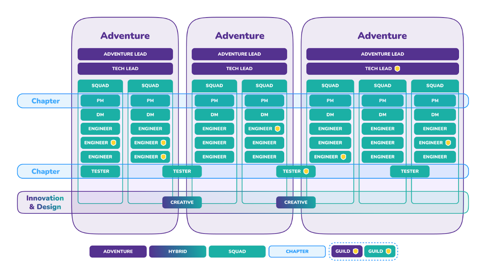

Introduction
Me
My name is Daniel Taplin, and I have been working at Holiday Extras for around 5 and a half years, starting in the Pay-per-Click advertising team in 2016, until early 2022 when I started the Software Developer Apprenticeship with Makers.
In my previous role, I worked primarily with the Google Ads online advertising platform, with reporting done in other G-Suite apps such as Google Sheets. During this time, I looked for a way to make some tedious, everyday tasks, such as building weekly reports, more automated, as they took a lot of time and involved lots of repetition. I soon discovered Google Apps Script, an Integrated Development Environment (IDE) built into G-Suite that allows Javascript code to be written to integrate G-Suite apps such as Google Ads, Sheets, Drive and Gmail with each other. I was immediately inspired by the possibilities that this opened up for me, as well as the creative problem-solving nature of coding itself, and I had soon taught myself some Javascript for work, as well as Python and C# for hobby projects outside of work, such as making games.
Although I felt greatly empowered and inspired by learning to code, I did not believe at the time that becoming a developer was a feasible career path for me; I had studied Politics at University, had no IT qualifications, and the job market for developers seemed extremely competitive and intimidating to those with little experience. That is why the Software Developer Apprenticeship at Makers is such a fantastic opportunity for me, as it allows me to take my career in the direction I had been hoping for, while still being able to work at Holiday Extras, a company I have enjoyed working at for the last 5 years!
Holiday Extras
Company
Holiday Extras is a Holiday Ancillaries company that specialises in airport parking, hotels, lounges, travel insurance, as well as other travel-related services. It was founded in 1983, and currently works with a network of over 8,000 travel agents and with 4,000 exclusive partnership agreements.
Team Structure
Holiday Extras’ Tech and Product team is divided into ‘Adventures,’ business units based around an overarching business goal, which are split into ‘Squads’ which own a specific part of the customer journey or tech platform. Squads are generally cross-functional and autonomous with few external dependencies. In addition to engineers, each Squad has a Product Manager responsible for strategic and business decisions, and a Delivery Manager to facilitate and lead sprint ceremonies, and enable the execution of engineering work. (K3)
The members of each Squad may change each quarter depending on business needs, and new Squads may be created or some ended.
Fig 1: The Adventure structure at Holiday Extras
Health & Safety
Introduction to Health & Safety
Integrations Squad
The Integrations Squad is the only squad in the Supply Adventure, and deals mainly with backend services that interface with Holiday Extras’ suppliers. These services mainly consist of Proxies, which are responsible for giving & receiving requests to and from supplier sites, and Integrations, responsible for interpreting these requests and their results, so that they can be “understood” by other systems and services that need this data.
Agile Methodology
The Tech & Product Team work using the Agile methodology, and the Integrations Squad work in a hybrid “scrumban” framework, a combination of the more structured Scrum, and the more flexible Kanban methods. This offers the team a good support structure, as well as the flexibility to work on urgent support tickets which are brought throughout each sprint. Sprints and the allocation of units of work (known as “tickets”) are facilitated by a system called Jira.
The Integrations Squad work on 2-week sprints, beginning each Thursday, and hold a number of meetings (or “ceremonies”) throughout each sprint:
- Stand up meetings - Short daily meetings in which team members update on how their work is going;
- Mid sprint review - A meeting halfway through the sprint to check on the Squad’s progress towards the work they have committed to this sprint;
- Backlog review - Run before each sprint begins, the Squad run through Jira tickets in the backlog to understand the work needed, discuss blockers, and estimate the time and effort (in “story points”) for the work;
- Demo - An opportunity for engineers to exhibit their work to stakeholders;
- Sprint planning - The Squad decides on work to commit to for the next sprint;
- Retro - A meeting to reflect on the previous sprint, highlight what went well and what could have gone better, and any actions or changes going forward.
A typical unit of work will be assigned at any point during the sprint, and must be peer-reviewed before it can be deployed to the live code-base and completed. Typically, each engineer should only have a maximum of 2 tickets open at any one time.
Why agile?
The Agile methodology was developed in response to the Waterfall methodology’s more rigid structure and lack of flexibility. Agile and Waterfall are two well-known, widely used and distinctly different approaches to project management; the main difference between the two is that Waterfall is a more linear system that requires each phase of a project ot be completed before moving on to the next, often with a hands-off approach by stakeholders until the project is complete, whereas Agile is more focused on shorter-term objectives and constant stakeholder feedback, allowing team members to work on multiple stages of a project simultaneously.
There are several “pros” and “cons” to each method:
| Agile | |
|---|---|
| Pro | Con |
| Short-term deadlines encourage productivity | Project timeline is more difficult to determine |
| Flexibility to change direction of projects | Potential for overlap if team members are working on multiple project phases simultaneously |
| Client-facing methodology incorporates feedback into the process | Deliverables not a requirement to move to different project phases - harder to keep track of overall progress |
| Waterfall | |
|---|---|
| Pro | Con |
| Each project phase requires a deliverable to move onto the next - more structured workflow | Each stage must be completed before moving to the next - process can take longer overall |
| Provides a concrete project plan from the beginning | Little/no flexibility as the entire project is outlined from the beginning |
| Project requirements are established early on - no need for constant review, which can save time | Issues caught further down the line require going back through previous project phases & can be harder to deal with |
Being a customer-focused company who work alongside a large number of suppliers, The Agile methodology allows Holiday Extras to adapt to quickly- and constantly-changing circumstances, and to change the course of a project based on feedback from stakeholders and customers. It also allows for more collaboration between cross-functional teams, and an ever-changing team structure that reflects The company’s current needs. (K5)
The Software Development Life Cycle
The Software Development Life Cycle is a process used by the software industry to design, develop and test software. The process can generally be broken down into 7 steps:
-
Planning
Defining the scope and terms of the project, creating clear goals and objectives
- Inputs: customer & stakeholder requirements
- Outputs: specification/list of business requirements, work broken down into “tickets” and given “story point” estimates
-
Define Requirements
Determining what the application will do, and resources needed to build it
- Inputs: requirement specification, story points estimate
- Outputs: list/statement of requirements & features
-
Design and Prototyping
Modelling the way the software will work & making a prototype
- Inputs: requirement/feature list
- Outputs: software design/prototype
-
Software Development
Building the software itself
- Inputs: physical design/prototype
- Outputs: developed software
-
Testing
Running tests to ensure each feature works as intended
- Inputs: developed software
- Outputs: quality assurance, functional software
-
Deployment
Making the application available/functional to users
- Inputs: functional software
- Outputs: availability to the user, operational system
-
Maintenance
Ongoing development, such as fixing bugs or errors not encountered during development
- Inputs: operational system
- Outputs: working solution
At Holiday Extras, all of these stages must be done in order to complete a unit of work, and several stages are formalised in various ways - for example, a piece of work must be reviewed and “approved” by at least one other engineer, and automated checks run to ensure that all unit tests are passing, before it can be deployed, formalising the “testing” stage of the Life Cycle.